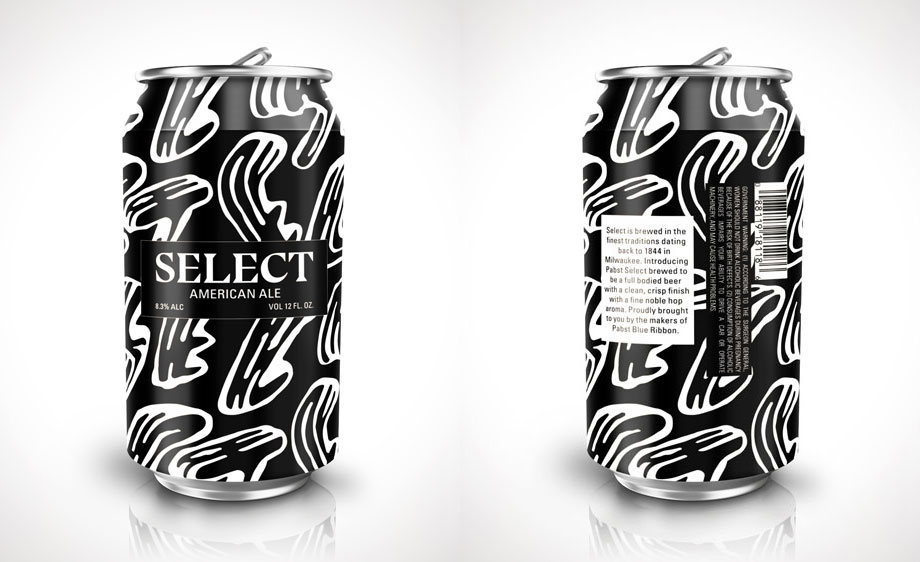
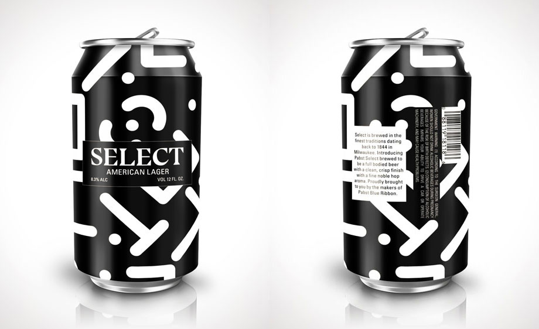
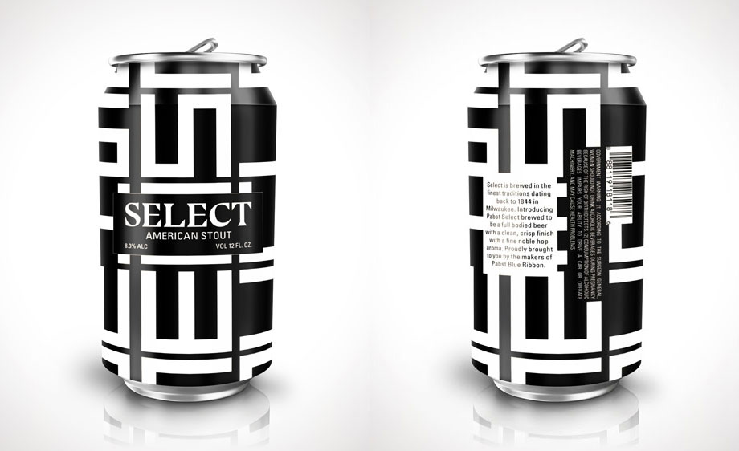
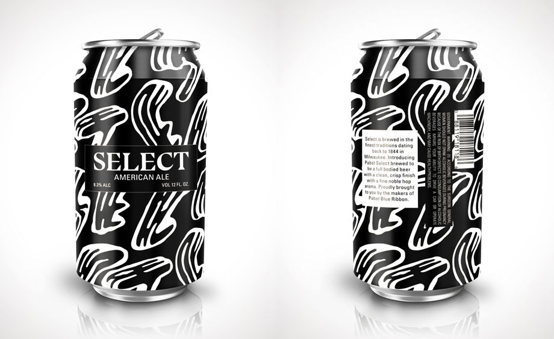
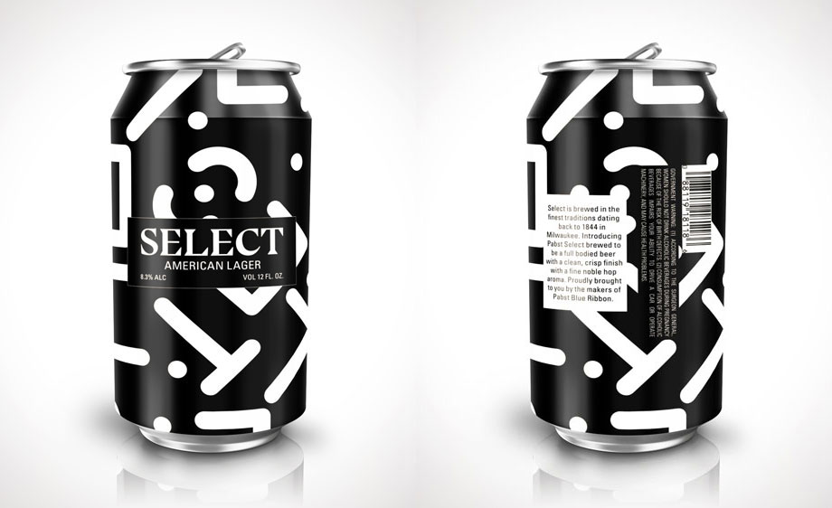
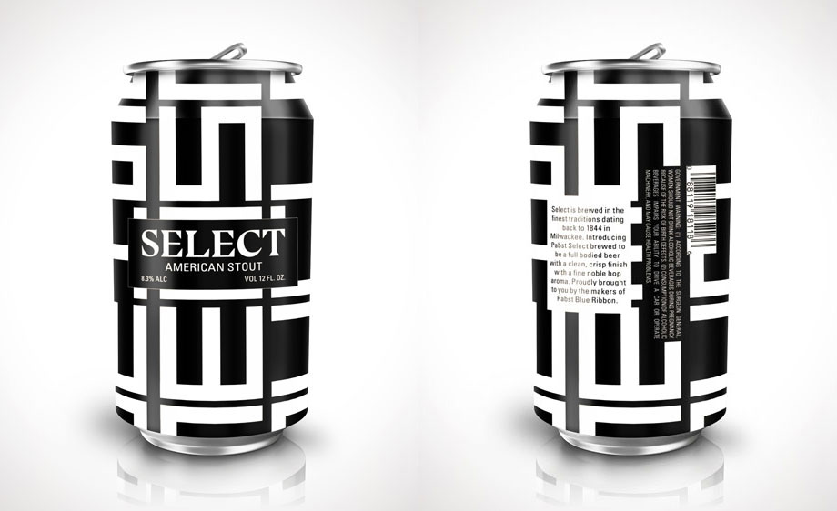

Select Beer Branding
Skills: Graphic design, branding, packaging
Tools: Illustrator, Photoshop
Branding assignment for Design Studio at NYU in Fall 2017. Special thanks to Professor Theresa Fitzgerald for her guidance throughout the project.
Planning (top)
The assignment was to create branding for Select, a craft beer from the makers of Pabst Blue Ribbon. With PBR's Americana visuals and "No-Marketing Marketing," the drink is a staple for counterculture crowds. In particular, PBR's nondescript image and affordability have cemented it as the drink of choice among urban hipsters. Pabst Brewing Company now seeks to expand its market by launching a craft beer targeted to a more mature audience.
But whom exactly is Select trying to reach? What message does Select convey that separates it from other craft beers?
In addition to researching the history of Pabst Brewing Company and PBR, I started compiling visual directions for Select. During the class critique of our boards I realized the first two themes weren't entirely concrete, so for the third board I honed in on the image of Select as a beer meant for an edgy crowd. However, unlike PBR's association with indie artists, Select was the drink for art influencers who hold MoMA membership cards and attend cocktail openings at David Zwirner.
Following this theme, I was interested in creating a series of craft beers whose designs all play on the word "Select." This was based on PBR's campaigns where the brewery invites artists to contribute designs and illustrations to decorate PBR cans.
Final Design (top)
Drawing inspiration from provocative American artists such as Franz Kline, Lee Krasner, and Casey Reas, I used a monochromatic palette featuring sleek letter forms to complement the idea of beer meant for a mature and cultured audience. The label design differs based on the type of beer and is intended for beer cans, echoing PBR's iconographic beer can designs. Ultimately, Select is the drink of choice for creatives who have grown out of the underground scene but still appreciate the noncomformist edge of Pabst Blue Ribbon.
 





Mock-ups from Zoki Design.